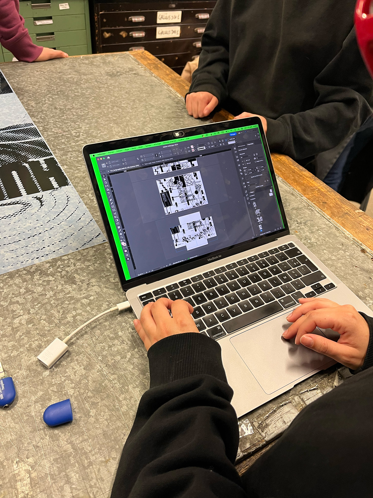
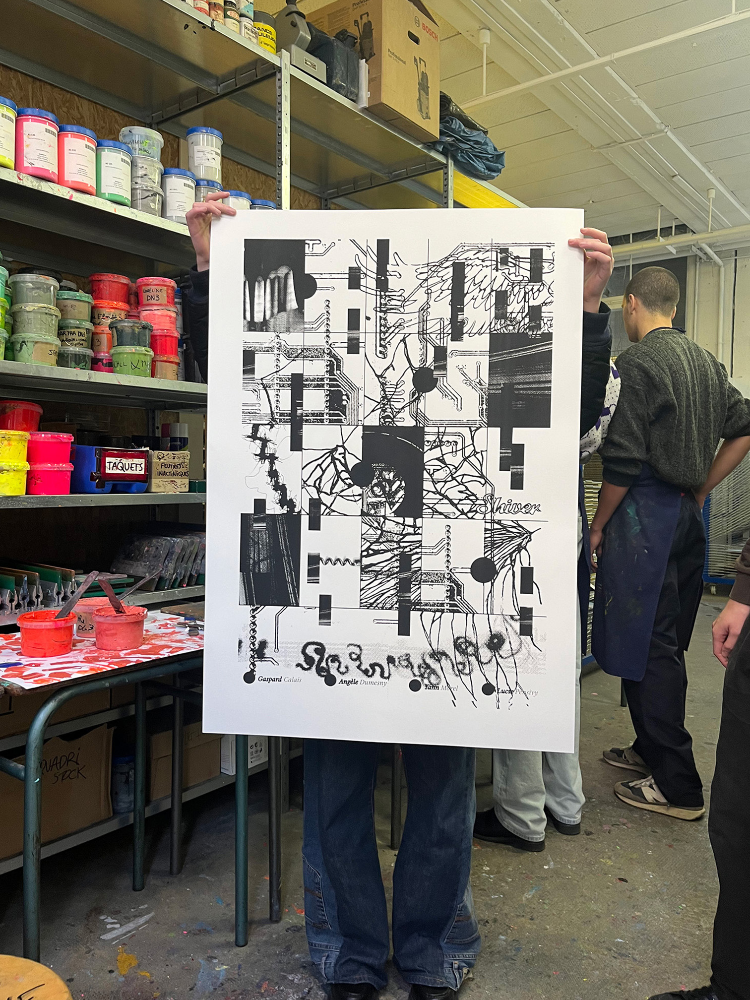
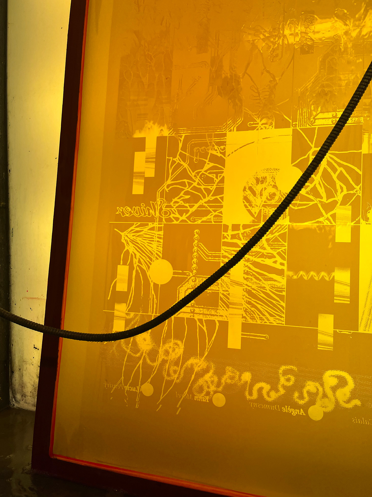
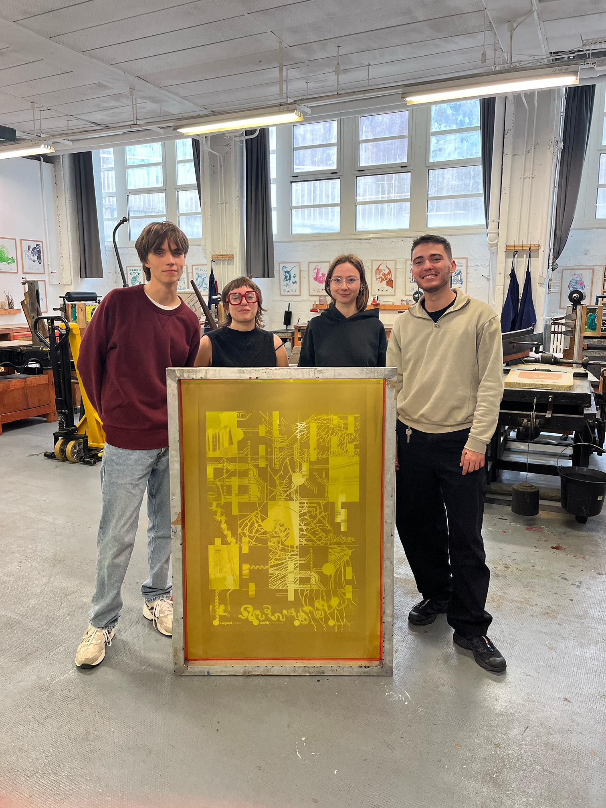
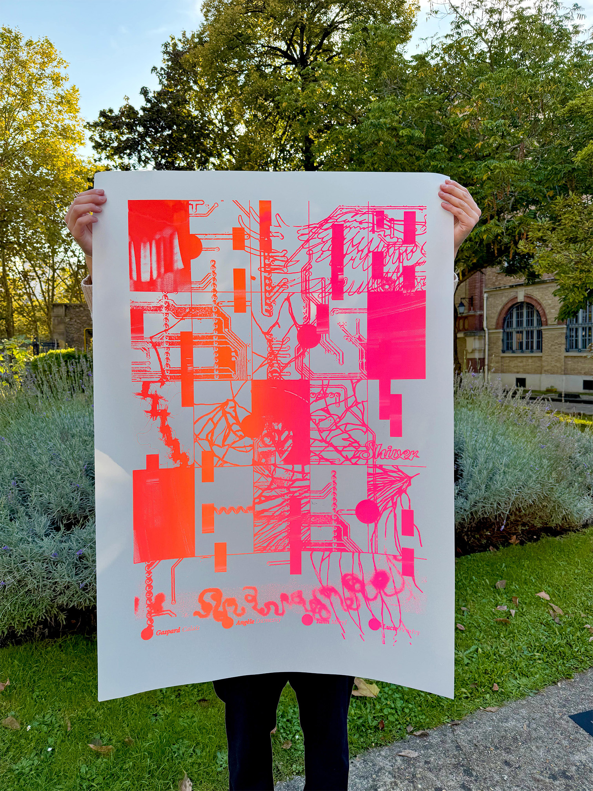

Workshop de sérigraphie au Laboratoire d’Expérimentation Graphique de l’École Estienne. En groupe, nous avons réfléchi à un objet capable de nous raconter individuellement, puis à la manière dont ces éléments s'intégreraient pour former un seul visuel. Nous nous sommes concentré·es sur la notion de traces : l’empreinte de nos souvenirs et de notre passé.




